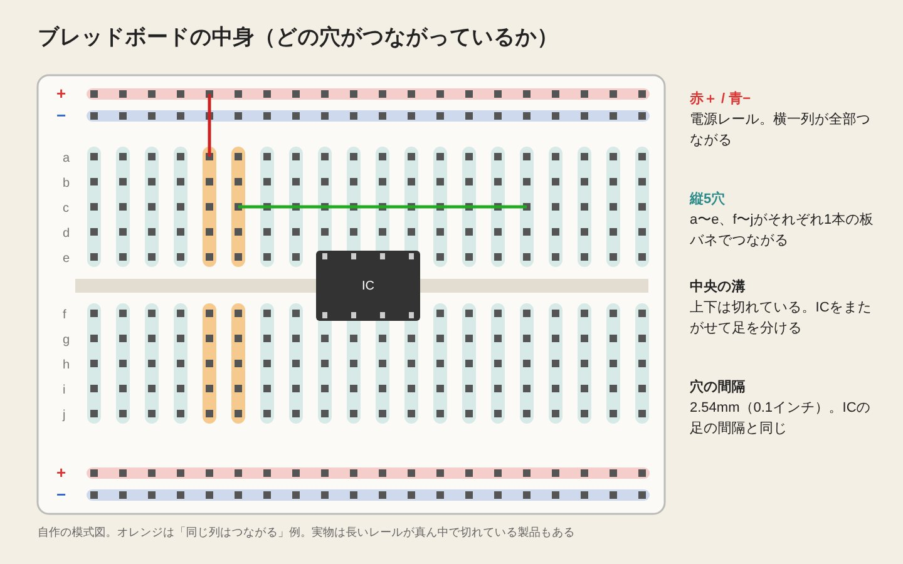

試作（プロトタイピング）
本来の使い道。センサーやLEDをマイコンにつないで、プログラムと一緒に動作を確かめる。動いたら同じ配置で基板に移す。

ブレッドボード（breadboard）は、直訳するとパンをこねたり切ったりする木の板。名前はそこから来ている。
ちなみに「ブレッドボード」は、電子工作に限らず「とりあえず動くか試すための試作品」という意味でも使われる。「ブレッドボード段階」と言えば試作段階のこと。
見た目はただの穴の並びだが、プラスチックの下に金属の板バネ（クリップ）が並んでいる。部品の足を挿すと板バネが足を挟み、同じ板バネの上にある穴どうしが電気的につながる。覚えることは下の表だけ。
| 部位 | つながり方 | 何に使う |
|---|---|---|
| 端子列（a〜e、f〜j） | 縦に並んだ5穴が1本の板バネでつながる。隣の列とはつながらない | 部品どうしをつなぐ。同じ列に挿せば配線したのと同じ |
| 中央の溝 | 溝の上（a〜e）と下（f〜j）は切れている | ICをまたがせて挿す。左右の足が別々の列に入るので、足どうしがショートしない |
| 電源レール（赤＋・青−） | 端に沿って横一列が全部つながる | 電源（＋）とGND（−）を配る。どこからでも電源が取れる |
| 穴の間隔 | 2.54mm（0.1インチ） | ICの足、ピンヘッダ、マイコンボードの足の間隔と同じ |
| 大きさ | ミニ（170穴）、ハーフ（400穴）、フル（830穴）など | ESP32の開発ボードは幅があるので、片側に1列しか余らないことがある |
つなぐ線はジャンパーワイヤ（両端がピンになった線）を使う。マイコンボードとは、ボードをブレッドボードに直接挿すか、オス-メスのジャンパーワイヤでつなぐ。
一言でいえば「はんだ付けする前に、回路が正しいか試す」ための道具。間違えたら抜いて挿し直せばいい。
本来の使い道。センサーやLEDをマイコンにつないで、プログラムと一緒に動作を確かめる。動いたら同じ配置で基板に移す。
はんだごてが要らず、部品も再利用できるので、学校や入門キットの定番。回路図と実物の対応が目で追いやすい。
この本のレシピ集のような使い方。ESP32やRaspberry Pi Pico、Arduinoに温湿度センサー、表示器、ボタンなどを足す。スマートホームの「部品を足して試す」場面にちょうどいい。
仕事でも、基板を作る前に一部の回路だけ組んで確かめることがある。ここから「ブレッドボード＝試作」という意味が広がった。
ユニバーサル基板も穴が2.54mm間隔で並んだ板だが、部品ははんだ付けして留める。ブレッドボードで動きを確かめ、ユニバーサル基板やプリント基板で完成させる、という順番になる。
ハーフサイズ（400穴前後）のブレッドボードと、オス-オス・オス-メスのジャンパーワイヤのセット。マイコンボードとLED、抵抗があれば最初の一歩（Lチカ）はできる。ESP32の開発ボードは幅が広いので、ブレッドボードを2枚並べて使う人もいる。
試す段階ならいい。部屋に置きっぱなしにする装置にするなら、接触不良と、ほこりや振動を考えて基板に移したほうが安心。電源は低い電圧（USBの5Vや3.3V）だけにして、家庭用の100Vは絶対にブレッドボードに通さない。
木の板に部品を留めて回路を作っていたのは確か。ただ「本当にパンの板を台所から持ってきた」ことを示す一次資料は見つからなかった。言葉としては、木の板の工作法の名前が、形が変わっても残ったと考えればよい。
本のマイコンレシピを試すなら、ハーフサイズのブレッドボードとジャンパーワイヤを買って、まずはESP32でLEDを光らせるところから。部屋に置くものは、動いたあとで基板に移す。